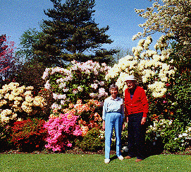
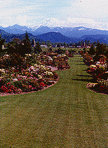
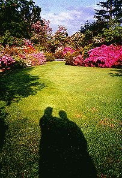
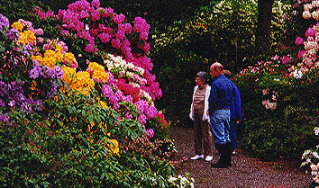

Introduction History Spring Tour Other Seasons Companion Plants Fruit/Veg/Herbs Work Family Links ARS
Visiting the Garden DESIGN ELEMENTS SPECIMENS TIPS GARDEN FURNITURE
History of the Anderson Garden In Enumclaw, Washington--1961-2002
Prehistory
History of The First Anderson Garden, Springfield, New Jersey--1938-1961
Pictures of the Beginnings of the Second Anderson Garden, Enumclaw
|
Bob and Betty Anderson in 1993,
a year before he died and thirty-one years after they began
creating the garden.
|
 |
In the 1940s and 50s, Bob
and Betty Anderson hand-crafted a large stone house and created
an eight acre rhododendron park in Springfield,
New Jersey. But Bob had read about the Pacific Northwest climate
that was ideal for cultivating a wider variety of his favorite
plants. He had also read about Buckley loam, a rich, black volcanic
soil deposited by Mt. Rainier several thousand years ago. So in
the mid-1950's, he rode a Greyhound bus from New York City to
Seattle, took the local transit to the end of the line in Enumclaw,
and walked the rest of the way to Buckley. Bob loved the dirt
but couldn't find the site he was looking for and returned to
Enumclaw discouraged. Since there was only one bus a day, he had
several hours to wander around. He loved Enumclaw, and found the
same world-famous loam. The following year he returned and bought
a five acre hayfield at the edge of town.
When Bob and Betty were fifty,
they packed everything they could fit into their nursery truck
and headed to the Pacific Northwest for good. In the first year,
Bob designed the house (he let someone else build this one) and
drew up the garden plans, while Betty
taught school. In 1962 they moved in and began their transformation
of the hayfield and their second rhododendron park.
The garden design reflects
influences of northeastern, southeastern (Bob is originally from
the mountains of North Carolina) and northwestern styles, and
integrates elements of British and Japanese gardens. Bob's training
in landscape architechiture at Penn State gave him the technical
skills to translate his unique vision into an arrangement of living
plants.
One of the most distinguishing
features of the garden is its color composition. Bob was an oil
and watercolor painter for most of his life, and studied for years
at the Art Students' League in New York City. In selecting combinations
of plants, Bob paid careful attention to size and blooming season,
but he also visualized patterns of color many people would not
attempt. But as in an oil painting, two colors that would not
seem to mix exhibit a special beauty in the presence of a third.
In the garden, he painted from an extensive palette in his mind,
able to see how his brush strokes would appear years later.
Over the years, Bob collected
more than a hundred species and four hundred different hybrids
of rhododendrons (including azaleas.) To provide the several thousand
plants needed to complete the garden, he propagated them from
cuttings in Nearing frames. Complementing these were hundreds
of companion plants--trees, shrubs, and flowers--carefully chosen
for form, leaf texture, color, and compatibility.
Because much of the garden
came from cuttings, it matured slowly over the years. In the 1960s,
the lawn and beds stepped their way outward to the back line.
The young garden was sunny and open. In the 70s, the planned contours
emerged as different plants grew at different rates. Trees began
providing a little shade. By the 1980s, they were large enough
to give much of the garden the woodland setting that has characterized
it since.
By 1975, the plants and trees were
getting larger. Housing developments
had not yet surrounded the garden.
|

|
Betty and Bob never sought
publicity, but over the years, word spread from person to person.
Visitors came from around the country and all over the world.
Garden clubs and other groups schedule tours each spring. The
American Rhododendron Society brought several busloads of rhododendron
enthusiasts in 1993 and 1999 when their national conventions were
held in the Seattle-Tacoma area. Bob and Betty never expected
this much attention to their garden, but always managed to be
gracious to the many visitors.
Several weddings
have been held in the garden. Other special events have included
a double birthday celebration and numerous
parties. Following Bob's death in 1994, a memorial service was
held for him in the garden, and his ashes were scattered among
the rhododendrons.
In 1996, the garden passed
to us in the next generation, John and Doreen Anderson. We moved
from the home and northwest
native garden we had spent the previous 25 years creating.
We hope to continue to develop and nurture the rhododendron garden
here and be good caretakers for many years ahead.
|
In 1996, the garden passed to the next
generation, John and Doreen Anderson.
|

|
Betty, Doreen, and
John reflect on how a
hayfield has changed
in forty years.
|
 |
Introduction History Spring Tour Other Seasons Companion Plants Fruit/Veg/Herbs Work Family Links ARS
Visiting the Garden Design Elements SPECIMENS TIPS GARDEN FURNITURE
© 2001 by John and Doreen Anderson